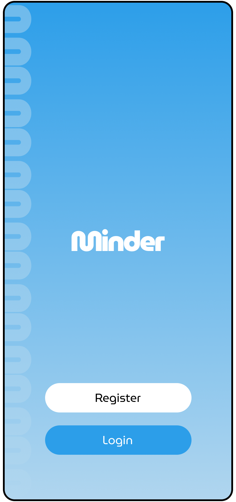
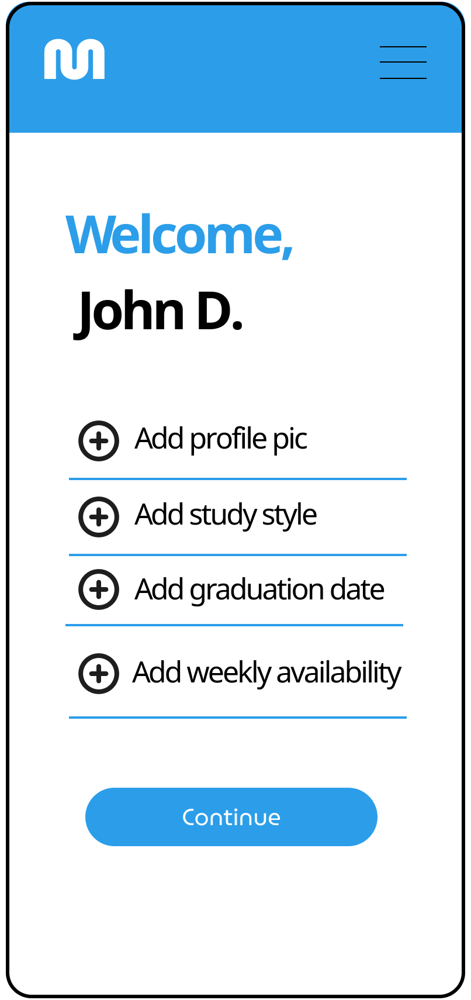
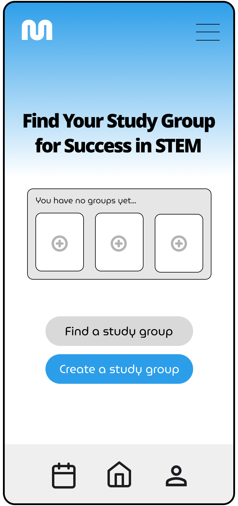
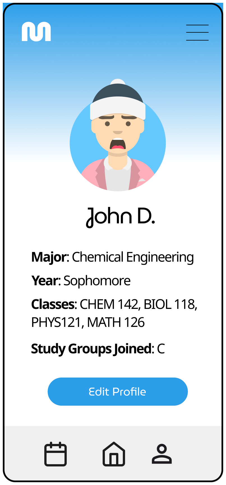
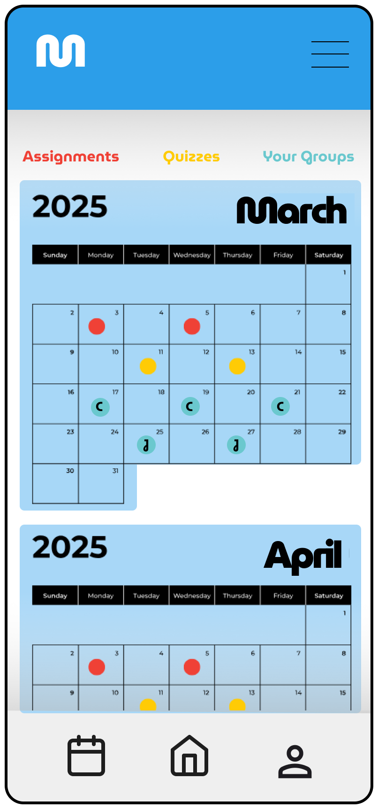

User Research / Mar 7, 2025
Minder
A study-group matching concept designed to help University of Washington students find compatible study partners, organize sessions, and keep collaborative work structured — built around research into scheduling, accountability, and privacy-aware coordination.

The problem
UW students struggle to form and sustain productive study groups. Generic tools like Discord or GroupMe offer no structure for academic collaboration — no way to match by course, schedule, or study style, and no accountability for follow-through.
Design goal
Create a purpose-built matching and coordination app that removes the friction of organizing group study: surfacing compatible partners, simplifying scheduling, and giving groups a shared space that keeps sessions structured without feeling transactional.
Deliverables
User research synthesis, concept definition, UI/UX design across five core screens spanning authentication, onboarding, group discovery, profile, and scheduling.
01 / Design challenge
Matching that means something
Most matching tools optimize for proximity or mutual interest. Minder goes further — pairing students by shared courses, overlapping availability, and compatible study habits. The design needed to communicate this depth without making onboarding feel like a survey.
The profile setup screen captures course enrollment, schedule availability, and personal study preferences in a single flow — creating the data layer that powers useful matches without exhausting the user upfront.
Privacy-aware coordination
Students are protective of their personal schedules and contact information. The design keeps coordination in-app — no phone numbers, no external calendars required. The group view and calendar screen give students a shared workspace that feels contained and safe.
The result is a product that feels less like a social network and more like a coordination tool: purposeful, low-noise, and structured around the specific context of academic collaboration.
02 / App screens
AUTHENTICATION

01 / Login
ONBOARDING

02 / Profile setup
CORE EXPERIENCE

03 / Home

04 / Profile
SCHEDULING

05 / Schedule
Core value proposition
Minder helps UW students form study groups around shared classes, schedules, goals, and study preferences. The concept reduces the overhead of organizing group study and gives students a clearer way to find compatible collaborators.
Unique selling point
Unlike generic messaging apps, Minder is built specifically for academic collaboration. It supports structured discovery, accountability, and privacy-aware coordination so study groups become more consistent and productive.
Results
The team developed a cohesive concept, refined user flow, and clear onboarding model. The project was presented to peers and industry professionals, with feedback focused on usability, privacy, and the value of making study coordination more intentional.